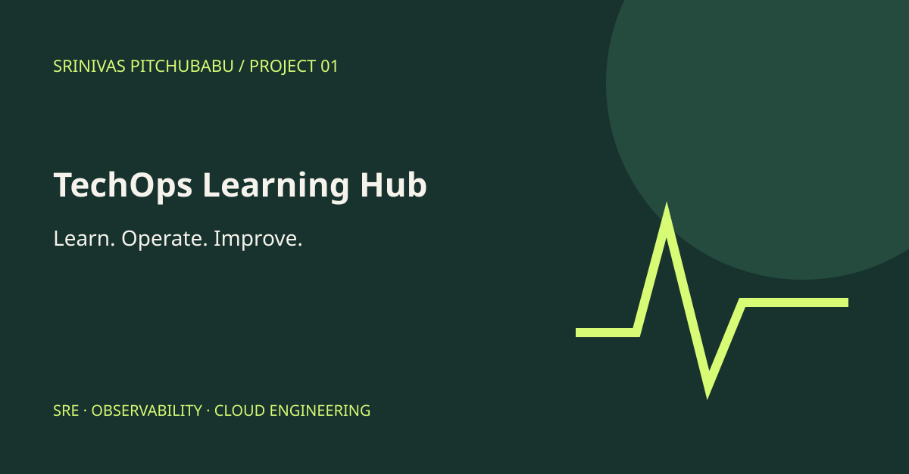

Project 01 / Public showcase plan
TechOps Learning Hub
A structured reference for SRE, observability, Kubernetes, cloud infrastructure, and delivery practices.

The engineering focus
Organize operational concepts into focused learning paths with practical, independently written examples.
Reliability fundamentals
Cloud architecture
Deployment and recovery
Public version status
Built locally: 26 topic pages across six tracks, searchable navigation, fictional exercises, review answers, and a request-based error-budget calculator. The separate GitHub repository and live site have not been published yet.
Public assets will be independently prepared. No client names, production records, internal addresses, or private screenshots are included.
Explore all projects